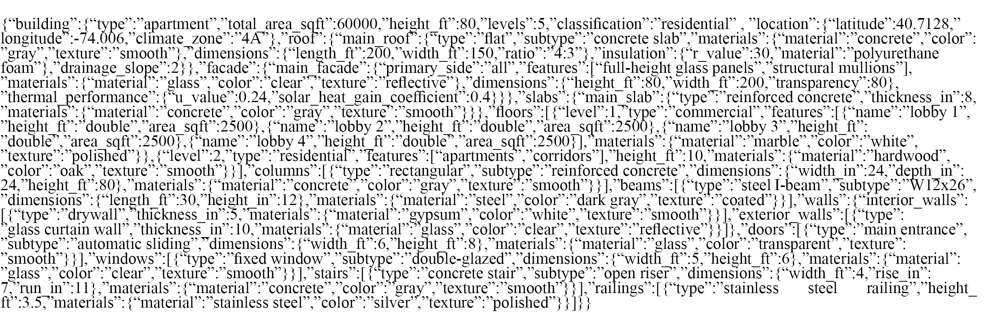

Project Overview
The emergence of large language models (LLMs) has introduced innovative workflows in the architecture, engineering, and construction (AEC) Industry. While Building Information Modeling (BIM) has been widely adopted, the integration of LLMs with BIM remains in its infancy and has not yet been actively involved in the full lifecycle of architectural project design. Moreover, BIM's inherent complexity and the expertise required for its effective usage pose significant barriers for designers, particularly in resource-constrained regions with limited training and financial capacity. While prior studies have explored applications of natural language processing (NLP) in certain design procedures, these efforts remain fragmented, addressing only isolated aspects of the whole architectural workflow. To bridge this gap, this study proposes a comprehensive methodology that integrates LLMs and BIM technologies to create a full lifecycle architectural design framework. The goal of this study is to demonstrate the potential of LLMs to simplify BIM tools and optimize end-to-end design workflows.
Duration: August 2024 - November 2024
Team: John Masataka Xianfeng Jiang
Advisors: Prof. Laura Kurgan (Columbia University), Snoweria Zhang (Delve Google)
Introduction
BIM has become an important tool for modern architectural practices, offering crucial functionalities for modeling, visualization, coordination, and lifecycle management. However, due to its complexity, steep learning curve, and lack of standards (Muhammad et al. 2021), BIM still presents challenges in the architectural design workflow. These challenges are especially pronounced in regions with limited access to specialized training and financial resources, leading to disparities in BIM's adoption and usage.
On the other hand, LLMs have demonstrated immense potential in the AEC industries, including assisting with complex design tasks, streamlining communication between various stakeholders, processing data-driven decision-making, and simplifying project management (Eloundou et al. 2023). Current research and industrial applications primarily focus on the integration of NLP tools within specific aspects of design workflows (Du et al. 2024), including interpretation of building regulations (Fuchs et al. 2023), and enhancing building layout optimization (Alavi et al. 2024). However, these implementations remain fragmented and lack a comprehensive approach that covers the full lifecycle of an architectural project, thus they are not able to serve the complete architectural design process in a practical application.
In addition, foundational research in AEC automation has explored rule-based and ontology-driven methods to enhance BIM interoperability and compliance verification. They have been widely investigated to formalize regulatory constraints and facilitate automated compliance assessment (Pauwels et al. 2017). These approaches enable machine-readable representations of zoning laws and building codes, allowing for efficient regulatory validation in BIM environments. Furthermore, semantic BIM querying frameworks (Yin et al. 2023) have demonstrated the potential to enhance information retrieval and design validation by enabling natural language-based model interrogation. Despite these advancements, existing solutions often require significant manual input for rule definition and adaptation, limiting their accessibility for non-expert users.
To address these limitations, this study proposes a method that integrates LLM and BIM to enhance design workflow, primarily focusing on the case of the apartment building.
Methodology
This study proposes a framework that leverages the capabilities of an LLM, specifically ChatGPT-4.0, to streamline multiple stages of the architectural design workflow within a BIM environment using Autodesk Revit 2024.
The framework is developed in C# and consists of three primary classes: (1) user interaction, where users input prompts through a graphical user interface (GUI) implemented in Windows Presentation Foundation; (2) AI processing, where user input is formatted, sent to a backend server, and processed through LLM; and (3) modeling, where BIM elements are built in Revit using the Revit API. In addition, A Flask-based backend server developed in Python communicates between the C# application and OpenAI API, handling requests and returning structured responses in JSON format (Figure 1).

Figure 1. Workflow Chart.
To standardize data representation, a JSON schema was designed to encapsulate an apartment building's attributes (Figure 2). The schema includes hierarchical data elements, starting from fundamental building parameters (e.g., program, dimensions) and extending to detailed components such as facades, roofs, slabs, materials, and levels. Upon system initialization, this structured JSON format is transmitted to ChatGPT with an instruction: "This is a JSON dataset representing an apartment building. Please retain its structure. Subsequent inputs will provide updated parameters, and your task is to modify the dataset accordingly. Do not provide any additional textual responses."

Figure 2. Predefined JSON Schema (Excerpted).
The workflow begins with the acquisition of site boundary data, initiated by the user input of a project site address. A local database API retrieves parcel information, and in the case of New York City, this data is sourced from NYC Open Data, specifically the MapPLUTO dataset, which contains lot boundaries, zoning attributes, and land use information. The dataset, provided in Shapefile format, is processed using Python's geopandas library. The shapefile is filtered using Borough, Block, and Lot (BBL) identifiers to extract the precise site boundary. In this process, GIS site coordinates (EPSG:2263) are converted to Revit's internal coordinate system. The extracted geometric data is then reconstructed as a ModelCurve using the Revit API, allowing the site boundary to be accurately represented within the Revit modeling environment.
Subsequently, users input project descriptions in the textbox on the GUI, detailing aspects such as gross floor area, floor height, and material selection. These descriptions are stored as the variable ProjectDescription. Simultaneously, users select all boundary lines within the Revit interface. Once selected, the geometric data of these lines is stored in the variable SiteBoundary.
To incorporate zoning constraints, the system retrieves text data from a local zoning code database (NYC Zoning Resolution) using Scrapy in Python. In this study, a simplified set of regulations is used, focusing on parameters such as front wall setback, maximum height limitation, and lot coverage. Extracted zoning information is stored in the variable ZoningRegulations.
In the backend server, these three variables (ProjectDescription, SiteBoundary, and ZoningRegulations) are transmitted to LLM with an additional instruction: "Generate a building model based on the description in ProjectDescription within the defined geometry in SiteBoundary. Ensure compliance with the constraints specified in ZoningRegulations. The output should adhere to the predefined JSON schema, and no additional text responses should be provided."
ChatGPT first drafts an initial building representation in JSON format based on the predefined schema. It then analyzes the zoning constraints and modifies the model accordingly. For instance, an initial iteration may generate a building occupying the entire site, but a subsequent update reduces the footprint to comply with the required site occupation ratio and adds additional levels to meet gross floor area requirements. If conflicts arise, such as a scenario where compliance with one constraint (e.g., maximum building height) would lead to a violation of another (e.g., lot coverage limit), ChatGPT returns an error message and prevents further processing.
Once the final JSON representation is generated, the structured data is returned via the Flask-based backend to the C# application. The C# application then processes the JSON data and utilizes the Revit API to generate the corresponding BIM elements.
Experiment
To validate the proposed approach, an experiment was conducted using a site located in New York. The address "158 3rd Ave, Gowanus, Brooklyn, NY 11217" was inputted into GUI. It generated the boundary lines of the land lot in the BIM software. Following this step, a prompt was entered for the model generation: "I want to design a 60,000 square feet apartment with a glass façade and flat roof. The first floor should be double height." As a result, the system generated a 166 feet by 100 feet, 14-story apartment building featuring a double-height ground floor, a glazing façade, and a flat roof. The building footprint covered 65.5% of the lot and the total height is 140 feet. Starting from level 7, the facade was set back 20 feet (Figure 3).

Figure 3. Generated Building Model.
Discussion
The results of the experiment demonstrate that the proposed method successfully implemented an apartment design workflow. The generated models accurately align with user descriptions and zoning regulations. For example, the building complies with the maximum height limit of 145 feet, the maximum lot coverage of 83%, and maintains a front wall setback of 20 feet above a height of 60 feet. The entire process takes 3.5 minutes, which is significantly faster than conventional human-driven design workflows. By comparison with the regulations of the project site, the generated apartment model aligned with the zoning code. The AI-generated Revit model conforms to standard Revit object classification, with all components retaining their expected attributes, ensuring structural and semantic consistency. The models can be exported to DWG and IFC formats for further edition and collaboration. This approach meets daily design needs and offers benefits to design firms and training-resource-constrained regions, providing an accessible and affordable way of utilizing BIM for simple apartment designs. To further contextualize the reliability of LLM-generated designs, future work could incorporate evaluations based on established frameworks for automated code compliance, such as rule-based BIM validation (Eastman et al. 2009), to ensure robustness and accuracy in regulatory adherence.
However, certain limitations were observed. The site boundary generation occasionally caused system crashes, indicating the need for further refinement in the modeling logic. Additionally, due to the pre-set reading range limitations in the backend, ChatGPT only analyzes certain regulations, potentially affecting the accuracy in more complex scenarios. Furthermore, compared to human-designed models, the apartment generated by the current prototype remains largely objective, lacking subjective approaches such as aesthetic considerations and integration of local context. Finally, the prototype is limited to apartment design, as the predefined JSON schema is specifically aligned with apartment design requirements. To enable the prototype to accommodate a broader range of architectural designs (e.g., offices, schools), either additional JSON schemas must be developed, or a more advanced, adaptable JSON schema is required.
References
- Alavi, H., Gordo-Gregorio, P., Forcada, N., Bayramova, A., and Edwards, D. J. (2024). AI-Driven BIM Integration for Optimizing Healthcare Facility Design, Buildings 2024.
- Du, C., Esser, S., Nousias, S., Borrmann, A. (2024). Text2BIM: Generating Building Models Using a Large Language Model-based Multi-Agent Framework, arXiv:2408.08054v1.
- Eastman, C., Lee, J., Jeong, Y., and Lee, J. K. (2009). Automatic rule-based checking of building designs, Automation in Construction, 18(8), 1011-1033.
- Eloundou, T., Manning, S., Mishkin, P., and Rock, D. (2023). GPTs are GPTs: An Early Look at the Labor Market Impact Potential of Large Language Models, arXiv:2303.10130.
- Fuchs, S., Witbrock, M., Dimyadi, J., Amor, R. (2023). Using Large Language Models for the Interpretation of Building Regulations, Project and Production Management.
- Muhammad, I., Ying, K., Nithish, M., Xin, J., Xinge, Z., Cheah, C.C. (2021). Robot-assisted object detection for construction automation: data and information-driven approach. IEEE ASME Trans. Mechatron.
- Pauwels, P., Zhang, S., and Lee, Y. C. (2017). Semantic Web Technologies in AEC Industry: A Literature Review, Automation in Construction, 73, 145-165.
- Yin, M., Tang, L., Webster, C., Xu, S., Li, X., and Ying, H. (2023). An Ontology-Aided, Natural Language-Based Approach for Multi-Constraint BIM Model Querying, arXiv:2303.15116.